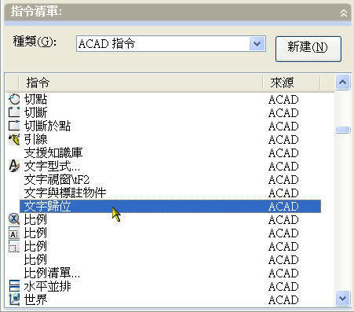
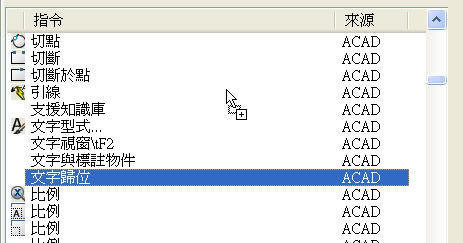
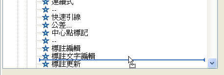
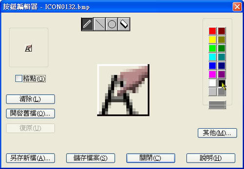

*** 以下方法適用為 AutoCAD 2006 以上版本 ***
1.使用 CUI 指令，螢幕上將顯示「自訂使用者介面」對話方塊。
※管理自訂的使用者介面元素 (例如，工作區、工具列、功能表、快顯功能表與鍵盤捷徑)

2.選擇「工具列」→「標註」....展開所有工具列的按鈕。

※「工具列」節點顯示在所有工作區中定義的工具列。選取一個工具列以進行編輯，並定義使用該工具列的工作區。
3.選擇「指令清單」→「ACAD指令」→ 選擇 文字歸位 指令

4.按住滑鼠左鍵拖曳

5.到標註工具列 → 決定工具按鈕位置後，放開滑鼠左鍵。

※會建立該 文字歸位 工具按鈕

6.指定按鈕影像 →

會自動指定 大小影像

※也可自行編輯影像

7.最後按確定即可。

※即時在標註工具列產生一個 使用者自訂工具按鈕 文字歸位。